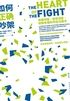
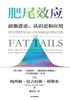
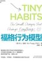
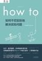
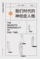
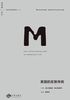
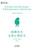
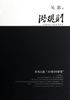
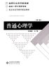

微信读书笔记
Built with
Drag image to reposition
Hide description
微信读书笔记
Jerry’s Bookshelf
Gallery
Table
Filter
Sort
规则的悖论
读完
10分
女性主义有什么用？（日常人文课）
读完
26分
黑猩猩的政治：猿类社会中的权力与性
读完
24分
刘夙的科技世界
在读
1时26分
纳瓦尔宝典
读完
13分
疯狂的尿酸：不止是痛风
读完
46分
健身营养书：让增肌减脂变简单
读完
3时3分
世界是红的
读完
1时57分
法治的细节
读完
1时
查理·芒格的原则
读完
2时16分
税的真相:让老百姓读懂中国税
读完
2时54分
和狗狗的十二次哲学漫步
读完
13分
愚蠢的人类
读完
1时17分

如何正确吵架
读完
14分
债务和魔鬼：货币、信贷和全球金融体系重建
读完
22分
乌克兰拖拉机简史
读完
46分
奈飞文化手册
读完
19分
简单心理：向内看见
读完
1时16分
人口大逆转
读完
25分
文明的逻辑——人类与风险的博弈（全 2 册）
读完
1时25分
战略与路径：黄奇帆的十二堂经济课
读完
17分
分析与思考：黄奇帆的复旦经济课
读完
1时34分
奇石：来自东西方的报道
读完
5时5分
绝对笑喷之弃业医生日志
读完
24分
我在美国当精神科医生（微信读书联合出品）
读完
16分
人生十二法则
读完
1时32分
当我谈跑步时，我谈些什么
读完
18分

肥尾效应
读完
58分
没关系，我们都有点怪
读完
28分
欧洲与没有历史的人
读完
59分
戒糖：改变一生的科学饮食法
读完
1时17分

福格行为模型
读完
23分
论世衡史：被牺牲的“局部”：淮北社会生态变迁研究（1680—1949）
读完
2时47分
全球化与国家竞争：新兴七国比较研究
读完
54分

How to：如何不切实际地解决实际问题
读完
37分
享受紧张：脑科学让紧张感化敌为友
读完
31分
社会性动物（第12版）
读完
48分

我们时代的神经症人格
读完
1时16分
存在主义心理治疗
读完
24分
不原谅也没关系
读完
48分
怪诞行为学1：可预测的非理性
读完
4时48分

美国的反智传统
读完
4时22分

蛤蟆先生去看心理医生
读完
5分
翦商：殷周之变与华夏新生
读完
48分

潜规则：中国历史中的真实游戏
读完
24分
工作、消费主义和新穷人
读完
2时1分
戏很多的医学史
读完
7时35分
原则
读完
4时52分
家庭、私有制和国家的起源
读完
20分

普通心理学
读完
38分
Table